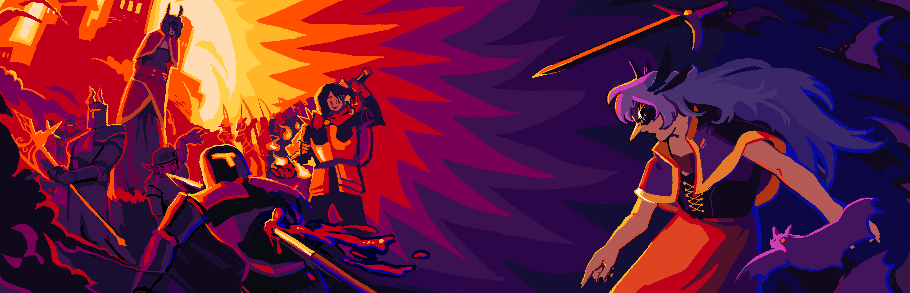
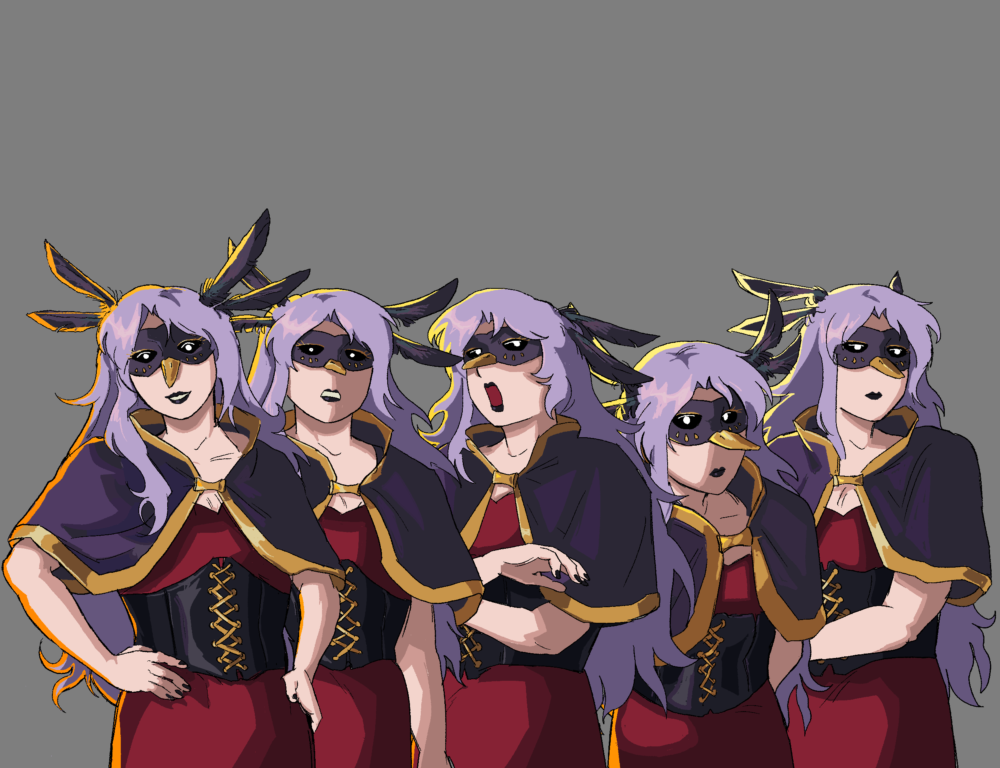
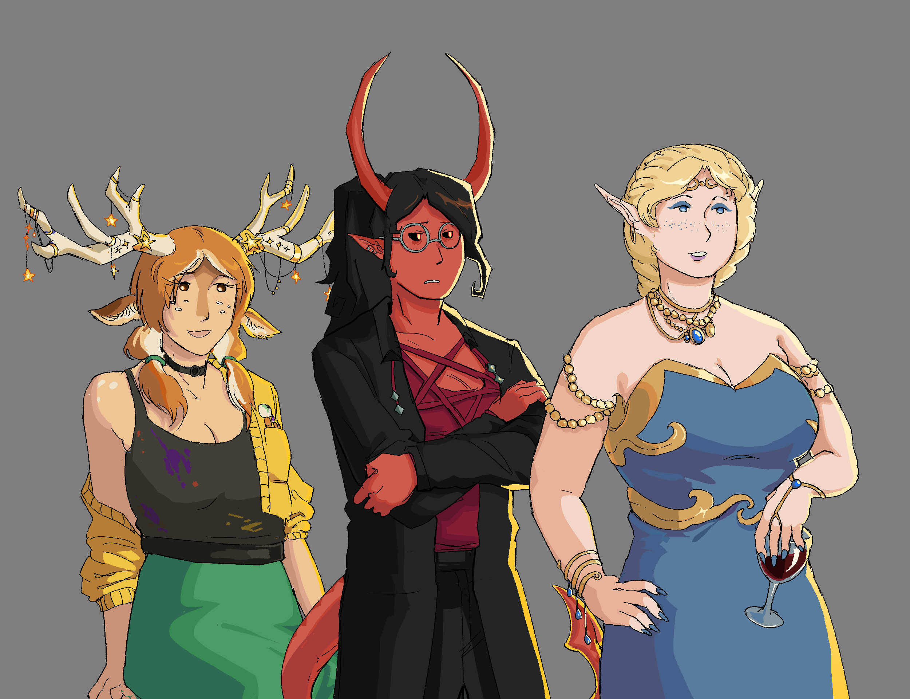
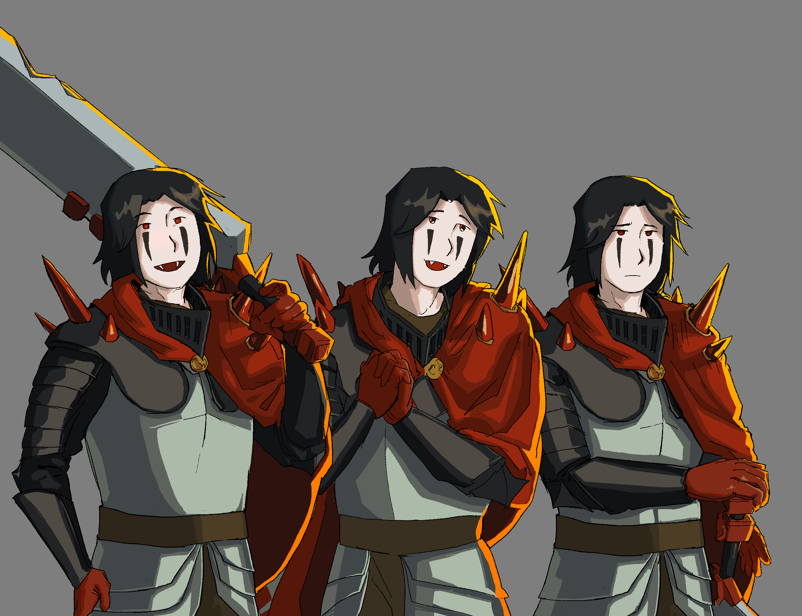
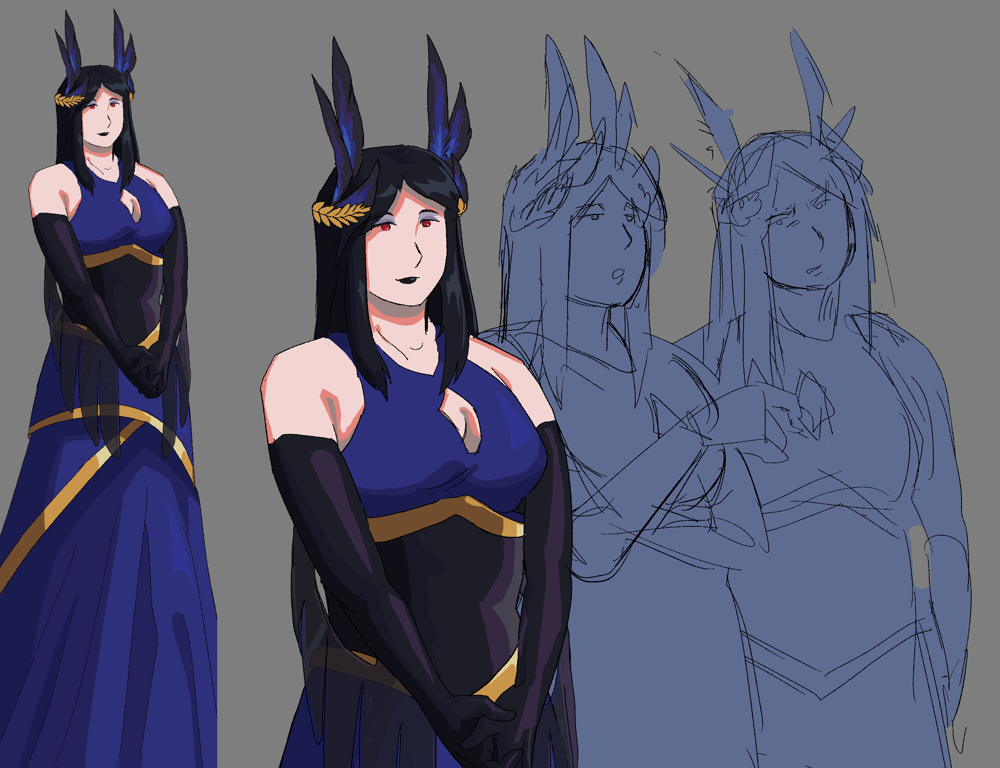
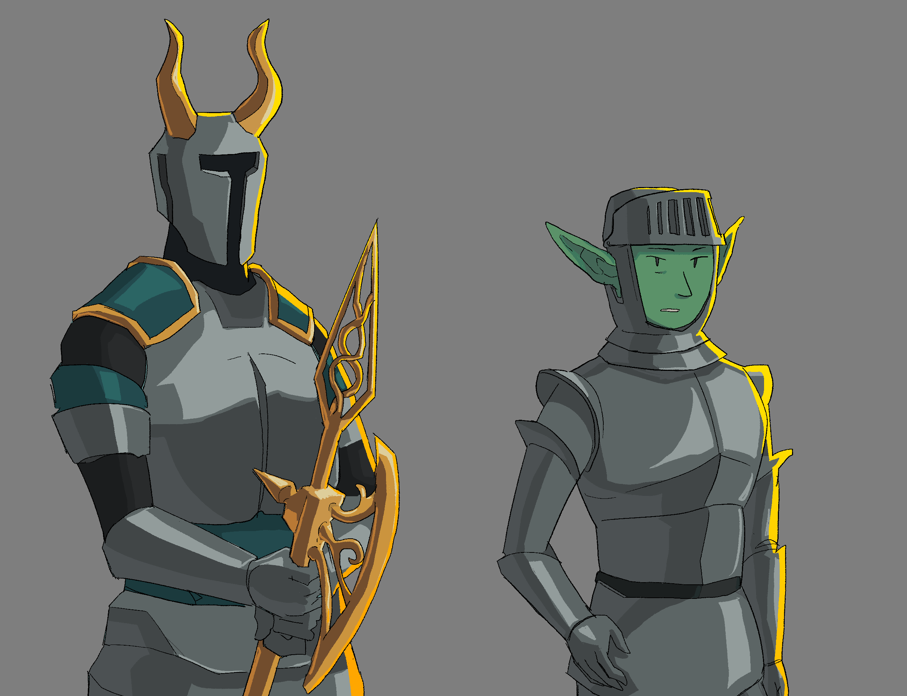

Not Yet Dawn
I am working as a concept artist/character designer, as well as the lead sprite and key art artist for the game. My role is to iterate on the character's designs to best fit the developer's vision and draw attention-grabbing key art to draw in customers to the game's store page. 30+ fully rendered illustrations have been created for the game so far!
Dawn

Dawn's dialog sprites.
Dawn's design was slowly adjusted over time to fit the needs of the game and with what the player would see in mind-her hair and feathers create a striking silohuette that is distinguishable from the various enemies. The creation of her sprites acted both as a test for her dialog sprites as well as the general style for the game, with a lot of back-and-forth between myself and the developer of the game to make sure they fit her vision.
Dawn's Friends

Dawn's friend's dialog sprites.
Dawn's three friends who she drinks with. Each character has their own story that the player can unravel through multiple runs in the game. Each character was designed to feel distinct-Design the art student, Roslyn the demon doctor, and Sierra the wealthy elf.
Dawn's Enemies

Chaelin, Dawn's childhood friend's dialog sprites.
The first boss of the game, Chaelin is the gatekeeper for Dawn's house. As a fellow vampire, he shares design elements with Dawn and the later vampire enemies so the designs feel cohesive. His chunky armor and weapon helps differentiate him from Dawn, who specializes more in speed.


Camilla, Dawn's sister, and Camilla's knights' dialog sprites.
Compared to Dawn, Camilla is stronger, more put-together, and... significantly taller. Camilla commands her two knights to battle Dawn as she casts spells from the sideline. Camilla's outfit went through many iterations before landing on the current, with an asymmetrical dress and different hair entirely.